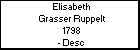

Nacido en Hölzel, Samara, Rusia, en el valle bajo del Río Volga, llega a Argentina en Febrero de 1878.y se instala en Colonia Hinojo con toda su familia..-
Samara, entre los años 1920 a 1930, pasa a llamarse Katharinenstadt.
A partir del año 1941, los alemanes que no pudieron huir o no quisieron hacerlo fueron perseguidos. Los rusos no estaban de acuerdo con su religión. Muchos fueron obligados ir a Siberia y a muchos otros los mataron, destruyendo las aldeas que los colonos habían construído y habitado por mas de cien años.
Generated by GenDesigner 2.0 beta 3.6